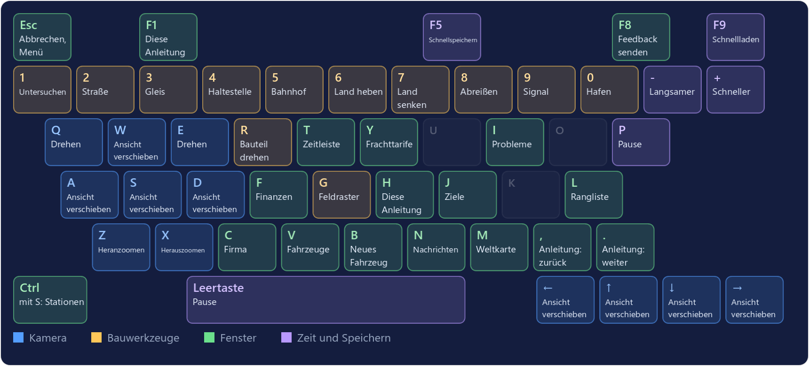

Steuerung
Tastatur, Maus und Trackpad, unter Windows und auf dem Mac.
Farbige Tasten haben eine Funktion. Die Farbe zeigt, welche Art.


Ansicht bewegen
| Maus | Trackpad | Tastatur | |
|---|---|---|---|
| Ansicht verschieben | Mit der rechten Taste ziehen. Mit Untersuchen geht es auch mit der linken. | Mit zwei Fingern scrollen. | W A S D oder die Pfeiltasten. |
| Zoom | Mausrad drehen. | Kneifen oder Ctrl halten und scrollen. | Z und X oder Page Up und Page Down. |
| Drehen | Mit der mittleren Taste ziehen oder Alt halten und ziehen. | Alt halten und seitwärts scrollen. | Q und E, je eine Vierteldrehung. |
- Die Ansicht scrollt auch, wenn die Maus den Bildschirmrand berührt. Das lässt sich in den Einstellungen abschalten.
- Lieber auf dem Trackpad per Scrollen zoomen? Schalte Zwei-Finger-Scrollen zoomt in den Einstellungen ein; dann verschiebt Ctrl + Scrollen die Ansicht.
Bauen und untersuchen
- Linke Taste: nutzt das aktuelle Werkzeug. Klicken zum Platzieren, Ziehen für Linien und Flächen.
- Rechtsklick: abbrechen. Der erste Klick verwirft das laufende Ziehen, der nächste legt das Werkzeug weg.
- Esc tut dasselbe, schließt dann das oberste Fenster und öffnet dann das Spielmenü.
- R dreht eine Station, ein Depot oder einen Flughafen vor dem Platzieren. Mit einem Brückenwerkzeug ändert es den Brückenstil.
- Mit Untersuchen wird der Zeiger über allem, was sich öffnen lässt, zur Hand, und ein Ring markiert das Fahrzeug, das ein Klick öffnen würde. Wo sich mehreres überlagert, klicke erneut für das nächste.
- Lass den Zeiger auf einem Fahrzeug ruhen, und seine Route erscheint in der Firmenfarbe auf der Karte, die Halte der Reihe nach nummeriert. Sie bleibt, solange das Fahrzeugfenster offen ist.
- O schaltet durch die Kartenebenen: Stationsbewertung, wartende Fracht, Abdeckung (welche Häuser und Industrien deine Stationen erreichen) und Bodenwert. Der kleine Knopf an der Minikarte listet sie auf, eine Legende erklärt die Farben, und Esc blendet die Ebene aus.
- Die letzte Ebene, Probleme, steckt eine Nadel auf alles auf der Problemliste: zeig auf eine Nadel, um zu sehen, was nicht stimmt, und klick sie an, um es zu öffnen.
- Brücken, Tunnel, Depots, Oberleitungen, Flughäfen, Land einebnen und die Verbinden-Werkzeuge haben keine Taste: Wähle sie in ihrer Gruppe in der Werkzeugleiste.
- Ctrl+Z macht deinen letzten Bau rückgängig und erstattet das Geld. Siehe Gelände & Abriss.
Windows und Mac
Das Spiel ist auf beiden gleich. Nur diese Tasten unterscheiden sich:
| Windows, Linux | Mac | |
|---|---|---|
| Stationen | Ctrl+S | ⌘S |
| Linien | Ctrl+L | ⌘L |
| Bau rückgängig machen | Ctrl+Z | ⌘Z |
| Schnellspeichern | F5 oder Ctrl+Shift+S | ⇧⌘S |
| Schnellladen | F9 oder Ctrl+Shift+L | ⇧⌘L |
| Vollbild | F11 oder Alt+Enter | ⌃⌘F |
| Feedback senden | F8 | fn+F8 oder das Spielmenü |
| Durch Ziehen drehen | Alt | ⌥ Option |
| Rechtsklick | Rechte Taste | Rechte Taste oder Ctrl + Klick |
| Zoomen per Trackpad-Scrollen | Ctrl | ⌘ Command |
| Thema in dieser Anleitung suchen | Ctrl+F | ⌘F |
Zeit
- Leertaste oder P pausiert und setzt fort. Bauen kannst du auch, während das Spiel pausiert.
- + und - ändern das Tempo: normal, x2, x4, x8. Bei normalem Tempo dauert ein Tag etwa 2 Sekunden.